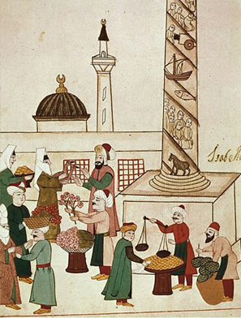

Research Project
The Economic Resources of the Islamic State in the Works on Kharāj and Siyāsah Sharʿiyyah and Their Impact on Achieving Comprehensive Development in the Modern State
This thesis examines the governance of economic resources in Islamic legal texts and their relevance to comprehensive development and contemporary financial governance.
Ibraheem Abdulwahab Abdulkareem
Research Fellow, AQIRI